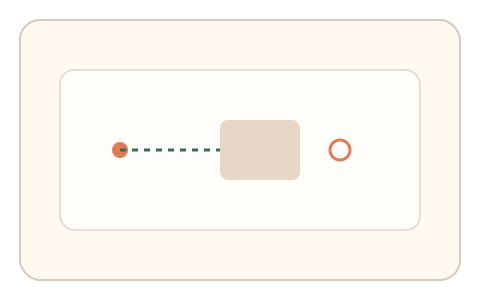
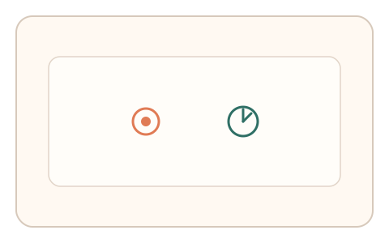
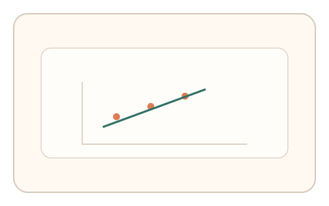

#135
E：双底座耦合 × 双信号 × 多阶段/双任务（认知偏置 + 生理/时域）
已扩展
遮挡预测‑反应时耦合
遮挡预测点击后紧接短反应时任务，比较预测误差与反应时耦合。
概念原文
物体遮挡消失后用户点击预测点，随后立即完成短反应时任务，系统对两者的相关性做群体基线比较。
以“预测‑反应”耦合曲线为人类特征。
研究背景
遮挡预测依赖对物体轨迹的外推，反应时任务反映即时处理负荷。预测误差与反应时往往相关，脚本难以自然匹配。
核心机制
- 展示运动物体并短时遮挡。
- 用户点击预测点并立即进入反应时任务。
- 记录预测误差与反应时。
- 分析误差‑反应时耦合关系。
用户流程
- 步骤 1：用户观看物体运动并被遮挡。
- 步骤 2：点击预测出现位置。
- 步骤 3：立即完成反应时任务并分析耦合。
判定信号
预测误差大小
外推误差体现感知与策略差异。
反应时与波动
反应时反映即时负荷与注意力状态。
判定逻辑
预测误差与反应时需呈合理关联且在基线范围；零误差或恒定反应判异常。
对抗面
- 脚本直接预测并给出最优点击
- 固定反应时或回放点击序列
防御与缓解
- 随机化速度、遮挡长度与轨迹
- 反应时提示随机化并含干扰
- 多轮一致性检测
可达性与风险
提供更慢速度与更大预测区域，支持键盘替代。
- 系统延迟影响反应时精度
- 任务节奏过快导致挫败
可视化状态

状态 1：遮挡预测
物体遮挡后预测出现点。

状态 2：即时反应
点击后进入快速反应任务。

状态 3：耦合分析
比较预测误差与反应时。
参考资料
Representational momentum
说明遮挡外推与位置偏移。
Reaction time
说明反应时分布与负荷关系。